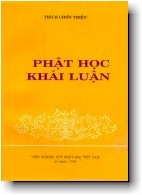

BuddhaSasana Home Page
This document is written in Vietnamese, with Unicode Times
font
|  | Viện Nghiên Cứu Phật Học Việt Nam Phật Học Khái LuậnThích Chơn ThiệnIn Lần Thứ Hai - 1997 |
Lời Giới Thiệu Nói đến Phật giáo là nói đến Phật, Pháp, Tăng. Phật, Pháp, Tăng tổng hợp lại thành một Phật giáo hoàn chỉnh. Vì vậy, nếu hiểu rõ Phật, Pháp, Tăng là hiểu rõ toàn bộ Phật giáo. Thế nào là Phật? - Phật tâm, Phật tánh, Phật nguyện, Phật hạnh, Phật trí, Phật đức, Phật thân, Phật độ..., đó là Phật. Thế nào là Pháp? - Tứ đế, Thập nhị nhân duyên, Vô ngã, Nhân quả, Nghiệp báo, Luân hồi, Lục độ, Thập độ, Pháp tướng...; đó là Pháp. Thế nào là Tăng? - Chí nguyện của Tăng, Giới luật của Tăng, Sinh hoạt của Tăng, Bổn phận của Tăng...; đó là Tăng. Cùng ý kiến trên, Thượng tọa Thích Chơn Thiện đã trình bày Phật học qua nội dung Tam Bảo trong tập sách này với ba chương lớn: Phật, Pháp, Tăng. Căn cứ trên các Kinh Nikàya và A-hàm với một phần ý nghĩa rút ra từ Kinh điển Bắc truyền, Thượng tọa đã trình bày Phật học một cách mạch lạc, rõ ràng, nhằm giới thiệu được nội dung cơ bản của Phật-học, đồng thời cũng gợi lên những đường hướng tư duy sâu sắc và đúng đắn để có thể phù hợp với nhiều đối tượng độc giả. Một đặc điểm khác nữa của tác phẩm là nêu được tính thực tiễn của Pháp áp dụng vào các ngõ ngách chính yếu. Thượng tọa còn chỉ ra cách ứng dụng Tứ đế vào đời sống cá nhân, gia đình, xã hội, khiến người học giáo pháp hiểu rằng không phải chỉ thông thạo giáo lý là đủ mà điều quan trọng nhất là phải thực hành được ngay trong cuộc sống hàng ngày. Vốn là một giảng sư của trường Cao cấp Phật học Việt Nam và của nhiều khóa Phật học ở nhiều nơi trong nước, Thượng tọa Thích Chơn Thiện đã là soạn giả, dịch giả của nhiều tác phẩm Phật học có giá trị. Tôi nghĩ rằng cuốn Phật Học Khái luận này phản ảnh một quá trình tu học nghiêm túc, một niềm tin tưởng sâu đậm đối với Phật giáo và một tấm lòng tha thiết khuyến tu đối với hết thảy mọi người; do đó, tôi trân trọng giới thiệu tác phẩm này cùng chư độc giả./. Từ Ðàm, mùa an cư
PL. 2537 -oOo- |
update:30-08-2000